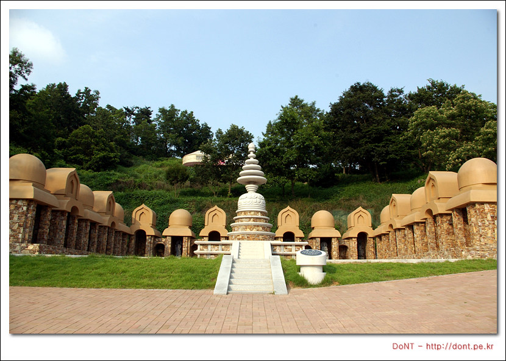

혼자 가는 여행 세번째 (20070723-27 남도여행) - 둘째날
- 2 min read

내소사까지 들어가는 전나무길은 사람이 많을 때 보다는 사람이 없을 때 걸어야 더 좋기에, 새벽 5시 반쯤에 일어나 사람이 없는 내소사를 찾아 갔습니다. 일주문을 지나면 바로 나오는 전나무숲길을 걷기 위해 새벽부터 일어나서 나왔습니다. 이 길을 천천히 걷고 있으면, 여러종류의 새 소리와, 옆에서 흐르는 냇물소리를 들립니다. 이런 한적함 때문에 이 내소사를 또 찾은 것이죠.


내소사의 대웅보전은 여느 절처럼 화려하지는 않지만, 오히려 그 모습이 더 친근하게 느껴집니다. 대웅보전의 꽃살문. 사람들은 이를 보고 최고의 걸작이라 칭송합니다. 하지만 저같은 무식쟁이의 눈으로는 어디를 어떻게 칭찬해야 하는지 보이질 않습니다. 여러번을 더 와서 보면, 점점 보이게 될까요?


조용하게 내소사에 갔다 떠날 채비를 하기 위해 다시 정든민박으로 돌아왔습니다. 여기에 많은 사람들이 앉아서 사진을 찍어 기억하는 것 같습니다. 주인아저씨가 손수 가꾼 한눈에 들어오는 작은 공원은 주인 아저씨의 손길을 느낄 수 있습니다.

변산 8경중 2경이라는 말에 혹해, 정든민박을 떠나 직소폭포로 갔습니다. 직소폭포에 가는 길은 여러갈래가 있지만, 그 중 제일 짧은 내변산탐방지원센터-직소폭포 코스를 선택했습니다. 한참을 걷다보니, 직소폭포에서 내여오는 물을 막은 저수지가 보입니다. 시원한 폭포를 가까이에서 볼 수 있습니다. 여기에 흐르는 물은 정말 시원합니다. 흐른 땀을 닦고, 시원한 바람을 맞으면서 천천히 쉬어봅니다.


내변산탐방지원센터에서 직소폭포에 가다보면 보이는 실상사지. 신라 신문왕 9년(689년) 초의선사기 처음 짓고, 조선시대 효령대군이 고쳐 지은 절이라는데, 1950년 화재로 이제는 그 터만 남아있습니다.
이른 아침은 아니지만 선운사를 찾았습니다. 선운사에서 도솔암에 올라가는 조그만 오솔길도 천천히 걸어가기에 무척이나 좋은 길입니다. 다만, 여름에는 별로 추천하지 않습니다. 도솔제에서부터 내려오는 도솔천 덕택에 어찌나 날벌레들이 많은지, 천천히 걷고 싶은 마음이 사라지게 만들더군요. 이른 봄이나, 늦은 가을에 다시 와보고 싶은 마음입니다. 대웅보전 뒤로는 선운사하면 빠뜨릴 수 없는 동백나무숲이 있습니다. 아무래도 선운사는 봄에 와야할 것 같습니다. 그러면 아무런 방해없이 오솔길을 걷기도 해보고, 활짝 핀 동백꽃도 볼 수 있겠네요.

선운사를 떠나 법성포로 가는 길이 너무 서운해, 한참을 돌아서 해안에 나 있는 도로를 타고 달려봅니다.
영광 법성포에 만든 백제불교 최초도래지가 있습니다. 법성포는 인도의 마라난타 존자가 들어와 불교를 전파했던 곳입니다.



법성포를 떠나 백수해안도로를 달려봅니다. 그동안 운전했던 것보다 더 천천히… 그렇게 한참을 달리다 노을정이라는 이름의 조그만 전망대앞에 차를 세우고 잠시 낙조를 지켜봤습니다.